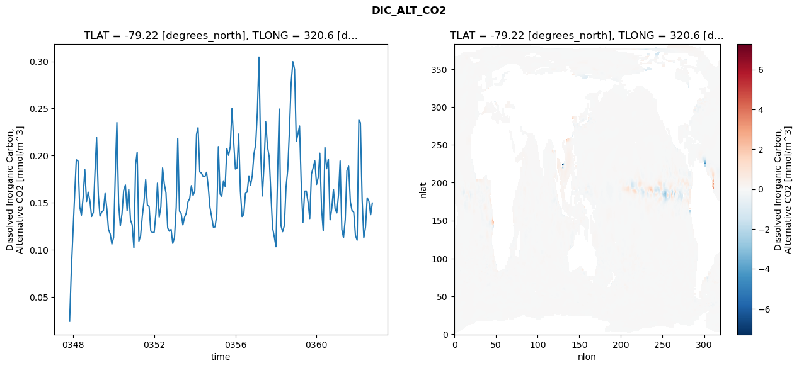
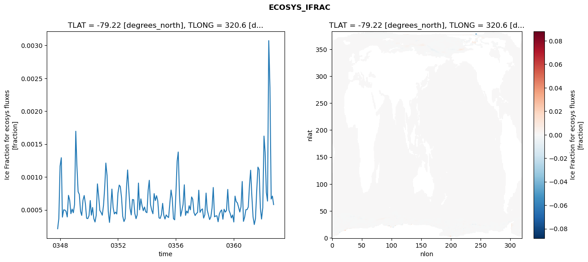
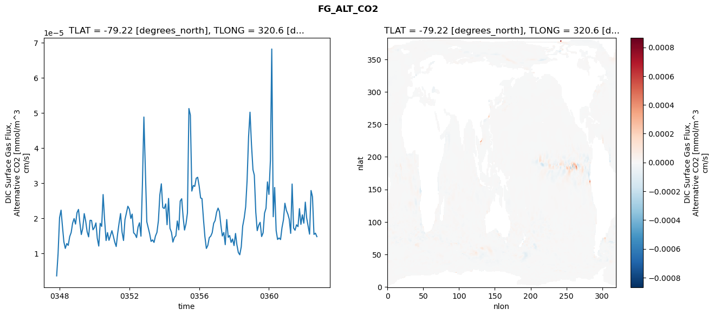
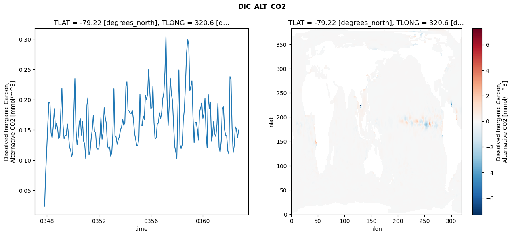
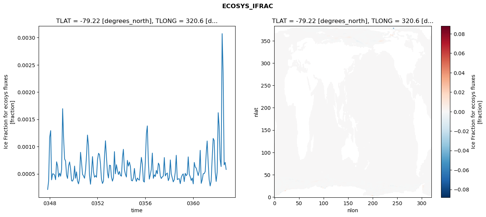
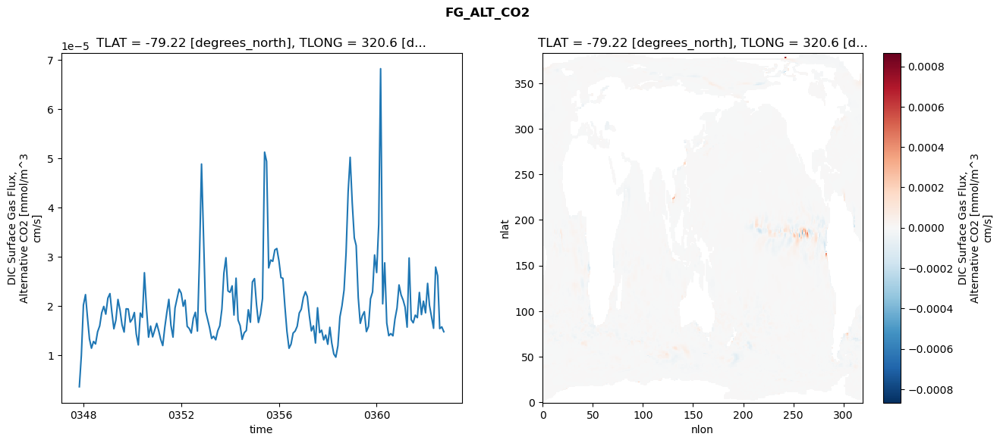

glb-dor_North_Atlantic_basin_031_1999-10-01_00127#
Simulation details#
Case: smyle.cdr-atlas-v0.glb-dor_North_Atlantic_basin_031_1999-10-01_00127.001
Basin: North_Atlantic_basin
Polygon: 31.0
Start date: 1999-10
Show code cell source Hide code cell source
import xarray as xr
import matplotlib.pyplot as plt
Show code cell source Hide code cell source
zarr_store = "/path/to/zarr/store"
# Parameters
zarr_store = "/global/cfs/projectdirs/m4746/Projects/Ocean-CDR-Atlas-v0/data/validation/smyle.cdr-atlas-v0.glb-dor_North_Atlantic_basin_031_1999-10-01_00127.001.validation.zarr"
Show code cell source Hide code cell source
%%time
ds_o = xr.open_zarr(zarr_store).compute()
ds_o
CPU times: user 685 ms, sys: 414 ms, total: 1.1 s
Wall time: 1.41 s
<xarray.Dataset> Size: 2MB
Dimensions: (nlat: 384, nlon: 320, time: 180)
Coordinates:
TLAT float64 8B -79.22
TLONG float64 8B 320.6
ULAT float64 8B -78.95
ULONG float64 8B 321.1
* time (time) object 1kB 0347-11-01 00:00:00 ... 0362-10-01 0...
z_t float32 4B 500.0
Dimensions without coordinates: nlat, nlon
Data variables:
ALK_ALT_CO2_diff (nlat, nlon) float32 492kB nan nan nan ... nan nan nan
ALK_ALT_CO2_rmse (time) float64 1kB 0.0138 0.03406 ... 0.107 0.1033
DIC_ALT_CO2_diff (nlat, nlon) float32 492kB nan nan nan ... nan nan nan
DIC_ALT_CO2_rmse (time) float64 1kB 0.02422 0.07794 ... 0.1371 0.1497
ECOSYS_IFRAC_diff (nlat, nlon) float32 492kB nan nan nan ... nan nan nan
ECOSYS_IFRAC_rmse (time) float64 1kB 0.0002128 0.0003707 ... 0.0005798
FG_ALT_CO2_diff (nlat, nlon) float32 492kB nan nan nan ... nan nan nan
FG_ALT_CO2_rmse (time) float64 1kB 3.567e-06 9.932e-06 ... 1.474e-05xarray.Dataset
- nlat: 384
- nlon: 320
- time: 180
- TLAT()float64-79.22
- long_name :
- array of t-grid latitudes
- units :
- degrees_north
array(-79.22052261)
- TLONG()float64320.6
- long_name :
- array of t-grid longitudes
- units :
- degrees_east
array(320.56250892)
- ULAT()float64-78.95
- long_name :
- array of u-grid latitudes
- units :
- degrees_north
array(-78.95289509)
- ULONG()float64321.1
- long_name :
- array of u-grid longitudes
- units :
- degrees_east
array(321.12500894)
- time(time)object0347-11-01 00:00:00 ... 0362-10-...
- bounds :
- time_bound
- long_name :
- time
array([cftime.DatetimeNoLeap(347, 11, 1, 0, 0, 0, 0, has_year_zero=True), cftime.DatetimeNoLeap(347, 12, 1, 0, 0, 0, 0, has_year_zero=True), cftime.DatetimeNoLeap(348, 1, 1, 0, 0, 0, 0, has_year_zero=True), cftime.DatetimeNoLeap(348, 2, 1, 0, 0, 0, 0, has_year_zero=True), cftime.DatetimeNoLeap(348, 3, 1, 0, 0, 0, 0, has_year_zero=True), cftime.DatetimeNoLeap(348, 4, 1, 0, 0, 0, 0, has_year_zero=True), cftime.DatetimeNoLeap(348, 5, 1, 0, 0, 0, 0, has_year_zero=True), cftime.DatetimeNoLeap(348, 6, 1, 0, 0, 0, 0, has_year_zero=True), cftime.DatetimeNoLeap(348, 7, 1, 0, 0, 0, 0, has_year_zero=True), cftime.DatetimeNoLeap(348, 8, 1, 0, 0, 0, 0, has_year_zero=True), cftime.DatetimeNoLeap(348, 9, 1, 0, 0, 0, 0, has_year_zero=True), cftime.DatetimeNoLeap(348, 10, 1, 0, 0, 0, 0, has_year_zero=True), cftime.DatetimeNoLeap(348, 11, 1, 0, 0, 0, 0, has_year_zero=True), cftime.DatetimeNoLeap(348, 12, 1, 0, 0, 0, 0, has_year_zero=True), cftime.DatetimeNoLeap(349, 1, 1, 0, 0, 0, 0, has_year_zero=True), cftime.DatetimeNoLeap(349, 2, 1, 0, 0, 0, 0, has_year_zero=True), cftime.DatetimeNoLeap(349, 3, 1, 0, 0, 0, 0, has_year_zero=True), cftime.DatetimeNoLeap(349, 4, 1, 0, 0, 0, 0, has_year_zero=True), cftime.DatetimeNoLeap(349, 5, 1, 0, 0, 0, 0, has_year_zero=True), cftime.DatetimeNoLeap(349, 6, 1, 0, 0, 0, 0, has_year_zero=True), cftime.DatetimeNoLeap(349, 7, 1, 0, 0, 0, 0, has_year_zero=True), cftime.DatetimeNoLeap(349, 8, 1, 0, 0, 0, 0, has_year_zero=True), cftime.DatetimeNoLeap(349, 9, 1, 0, 0, 0, 0, has_year_zero=True), cftime.DatetimeNoLeap(349, 10, 1, 0, 0, 0, 0, has_year_zero=True), cftime.DatetimeNoLeap(349, 11, 1, 0, 0, 0, 0, has_year_zero=True), cftime.DatetimeNoLeap(349, 12, 1, 0, 0, 0, 0, has_year_zero=True), cftime.DatetimeNoLeap(350, 1, 1, 0, 0, 0, 0, has_year_zero=True), cftime.DatetimeNoLeap(350, 2, 1, 0, 0, 0, 0, has_year_zero=True), cftime.DatetimeNoLeap(350, 3, 1, 0, 0, 0, 0, has_year_zero=True), cftime.DatetimeNoLeap(350, 4, 1, 0, 0, 0, 0, has_year_zero=True), cftime.DatetimeNoLeap(350, 5, 1, 0, 0, 0, 0, has_year_zero=True), cftime.DatetimeNoLeap(350, 6, 1, 0, 0, 0, 0, has_year_zero=True), cftime.DatetimeNoLeap(350, 7, 1, 0, 0, 0, 0, has_year_zero=True), cftime.DatetimeNoLeap(350, 8, 1, 0, 0, 0, 0, has_year_zero=True), cftime.DatetimeNoLeap(350, 9, 1, 0, 0, 0, 0, has_year_zero=True), cftime.DatetimeNoLeap(350, 10, 1, 0, 0, 0, 0, has_year_zero=True), cftime.DatetimeNoLeap(350, 11, 1, 0, 0, 0, 0, has_year_zero=True), cftime.DatetimeNoLeap(350, 12, 1, 0, 0, 0, 0, has_year_zero=True), cftime.DatetimeNoLeap(351, 1, 1, 0, 0, 0, 0, has_year_zero=True), cftime.DatetimeNoLeap(351, 2, 1, 0, 0, 0, 0, has_year_zero=True), cftime.DatetimeNoLeap(351, 3, 1, 0, 0, 0, 0, has_year_zero=True), cftime.DatetimeNoLeap(351, 4, 1, 0, 0, 0, 0, has_year_zero=True), cftime.DatetimeNoLeap(351, 5, 1, 0, 0, 0, 0, has_year_zero=True), cftime.DatetimeNoLeap(351, 6, 1, 0, 0, 0, 0, has_year_zero=True), cftime.DatetimeNoLeap(351, 7, 1, 0, 0, 0, 0, has_year_zero=True), cftime.DatetimeNoLeap(351, 8, 1, 0, 0, 0, 0, has_year_zero=True), cftime.DatetimeNoLeap(351, 9, 1, 0, 0, 0, 0, has_year_zero=True), cftime.DatetimeNoLeap(351, 10, 1, 0, 0, 0, 0, has_year_zero=True), cftime.DatetimeNoLeap(351, 11, 1, 0, 0, 0, 0, has_year_zero=True), cftime.DatetimeNoLeap(351, 12, 1, 0, 0, 0, 0, has_year_zero=True), cftime.DatetimeNoLeap(352, 1, 1, 0, 0, 0, 0, has_year_zero=True), cftime.DatetimeNoLeap(352, 2, 1, 0, 0, 0, 0, has_year_zero=True), cftime.DatetimeNoLeap(352, 3, 1, 0, 0, 0, 0, has_year_zero=True), cftime.DatetimeNoLeap(352, 4, 1, 0, 0, 0, 0, has_year_zero=True), cftime.DatetimeNoLeap(352, 5, 1, 0, 0, 0, 0, has_year_zero=True), cftime.DatetimeNoLeap(352, 6, 1, 0, 0, 0, 0, has_year_zero=True), cftime.DatetimeNoLeap(352, 7, 1, 0, 0, 0, 0, has_year_zero=True), cftime.DatetimeNoLeap(352, 8, 1, 0, 0, 0, 0, has_year_zero=True), cftime.DatetimeNoLeap(352, 9, 1, 0, 0, 0, 0, has_year_zero=True), cftime.DatetimeNoLeap(352, 10, 1, 0, 0, 0, 0, has_year_zero=True), cftime.DatetimeNoLeap(352, 11, 1, 0, 0, 0, 0, has_year_zero=True), cftime.DatetimeNoLeap(352, 12, 1, 0, 0, 0, 0, has_year_zero=True), cftime.DatetimeNoLeap(353, 1, 1, 0, 0, 0, 0, has_year_zero=True), cftime.DatetimeNoLeap(353, 2, 1, 0, 0, 0, 0, has_year_zero=True), cftime.DatetimeNoLeap(353, 3, 1, 0, 0, 0, 0, has_year_zero=True), cftime.DatetimeNoLeap(353, 4, 1, 0, 0, 0, 0, has_year_zero=True), cftime.DatetimeNoLeap(353, 5, 1, 0, 0, 0, 0, has_year_zero=True), cftime.DatetimeNoLeap(353, 6, 1, 0, 0, 0, 0, has_year_zero=True), cftime.DatetimeNoLeap(353, 7, 1, 0, 0, 0, 0, has_year_zero=True), cftime.DatetimeNoLeap(353, 8, 1, 0, 0, 0, 0, has_year_zero=True), cftime.DatetimeNoLeap(353, 9, 1, 0, 0, 0, 0, has_year_zero=True), cftime.DatetimeNoLeap(353, 10, 1, 0, 0, 0, 0, has_year_zero=True), cftime.DatetimeNoLeap(353, 11, 1, 0, 0, 0, 0, has_year_zero=True), cftime.DatetimeNoLeap(353, 12, 1, 0, 0, 0, 0, has_year_zero=True), cftime.DatetimeNoLeap(354, 1, 1, 0, 0, 0, 0, has_year_zero=True), cftime.DatetimeNoLeap(354, 2, 1, 0, 0, 0, 0, has_year_zero=True), cftime.DatetimeNoLeap(354, 3, 1, 0, 0, 0, 0, has_year_zero=True), cftime.DatetimeNoLeap(354, 4, 1, 0, 0, 0, 0, has_year_zero=True), cftime.DatetimeNoLeap(354, 5, 1, 0, 0, 0, 0, has_year_zero=True), cftime.DatetimeNoLeap(354, 6, 1, 0, 0, 0, 0, has_year_zero=True), cftime.DatetimeNoLeap(354, 7, 1, 0, 0, 0, 0, has_year_zero=True), cftime.DatetimeNoLeap(354, 8, 1, 0, 0, 0, 0, has_year_zero=True), cftime.DatetimeNoLeap(354, 9, 1, 0, 0, 0, 0, has_year_zero=True), cftime.DatetimeNoLeap(354, 10, 1, 0, 0, 0, 0, has_year_zero=True), cftime.DatetimeNoLeap(354, 11, 1, 0, 0, 0, 0, has_year_zero=True), cftime.DatetimeNoLeap(354, 12, 1, 0, 0, 0, 0, has_year_zero=True), cftime.DatetimeNoLeap(355, 1, 1, 0, 0, 0, 0, has_year_zero=True), cftime.DatetimeNoLeap(355, 2, 1, 0, 0, 0, 0, has_year_zero=True), cftime.DatetimeNoLeap(355, 3, 1, 0, 0, 0, 0, has_year_zero=True), cftime.DatetimeNoLeap(355, 4, 1, 0, 0, 0, 0, has_year_zero=True), cftime.DatetimeNoLeap(355, 5, 1, 0, 0, 0, 0, has_year_zero=True), cftime.DatetimeNoLeap(355, 6, 1, 0, 0, 0, 0, has_year_zero=True), cftime.DatetimeNoLeap(355, 7, 1, 0, 0, 0, 0, has_year_zero=True), cftime.DatetimeNoLeap(355, 8, 1, 0, 0, 0, 0, has_year_zero=True), cftime.DatetimeNoLeap(355, 9, 1, 0, 0, 0, 0, has_year_zero=True), cftime.DatetimeNoLeap(355, 10, 1, 0, 0, 0, 0, has_year_zero=True), cftime.DatetimeNoLeap(355, 11, 1, 0, 0, 0, 0, has_year_zero=True), cftime.DatetimeNoLeap(355, 12, 1, 0, 0, 0, 0, has_year_zero=True), cftime.DatetimeNoLeap(356, 1, 1, 0, 0, 0, 0, has_year_zero=True), cftime.DatetimeNoLeap(356, 2, 1, 0, 0, 0, 0, has_year_zero=True), cftime.DatetimeNoLeap(356, 3, 1, 0, 0, 0, 0, has_year_zero=True), cftime.DatetimeNoLeap(356, 4, 1, 0, 0, 0, 0, has_year_zero=True), cftime.DatetimeNoLeap(356, 5, 1, 0, 0, 0, 0, has_year_zero=True), cftime.DatetimeNoLeap(356, 6, 1, 0, 0, 0, 0, has_year_zero=True), cftime.DatetimeNoLeap(356, 7, 1, 0, 0, 0, 0, has_year_zero=True), cftime.DatetimeNoLeap(356, 8, 1, 0, 0, 0, 0, has_year_zero=True), cftime.DatetimeNoLeap(356, 9, 1, 0, 0, 0, 0, has_year_zero=True), cftime.DatetimeNoLeap(356, 10, 1, 0, 0, 0, 0, has_year_zero=True), cftime.DatetimeNoLeap(356, 11, 1, 0, 0, 0, 0, has_year_zero=True), cftime.DatetimeNoLeap(356, 12, 1, 0, 0, 0, 0, has_year_zero=True), cftime.DatetimeNoLeap(357, 1, 1, 0, 0, 0, 0, has_year_zero=True), cftime.DatetimeNoLeap(357, 2, 1, 0, 0, 0, 0, has_year_zero=True), cftime.DatetimeNoLeap(357, 3, 1, 0, 0, 0, 0, has_year_zero=True), cftime.DatetimeNoLeap(357, 4, 1, 0, 0, 0, 0, has_year_zero=True), cftime.DatetimeNoLeap(357, 5, 1, 0, 0, 0, 0, has_year_zero=True), cftime.DatetimeNoLeap(357, 6, 1, 0, 0, 0, 0, has_year_zero=True), cftime.DatetimeNoLeap(357, 7, 1, 0, 0, 0, 0, has_year_zero=True), cftime.DatetimeNoLeap(357, 8, 1, 0, 0, 0, 0, has_year_zero=True), cftime.DatetimeNoLeap(357, 9, 1, 0, 0, 0, 0, has_year_zero=True), cftime.DatetimeNoLeap(357, 10, 1, 0, 0, 0, 0, has_year_zero=True), cftime.DatetimeNoLeap(357, 11, 1, 0, 0, 0, 0, has_year_zero=True), cftime.DatetimeNoLeap(357, 12, 1, 0, 0, 0, 0, has_year_zero=True), cftime.DatetimeNoLeap(358, 1, 1, 0, 0, 0, 0, has_year_zero=True), cftime.DatetimeNoLeap(358, 2, 1, 0, 0, 0, 0, has_year_zero=True), cftime.DatetimeNoLeap(358, 3, 1, 0, 0, 0, 0, has_year_zero=True), cftime.DatetimeNoLeap(358, 4, 1, 0, 0, 0, 0, has_year_zero=True), cftime.DatetimeNoLeap(358, 5, 1, 0, 0, 0, 0, has_year_zero=True), cftime.DatetimeNoLeap(358, 6, 1, 0, 0, 0, 0, has_year_zero=True), cftime.DatetimeNoLeap(358, 7, 1, 0, 0, 0, 0, has_year_zero=True), cftime.DatetimeNoLeap(358, 8, 1, 0, 0, 0, 0, has_year_zero=True), cftime.DatetimeNoLeap(358, 9, 1, 0, 0, 0, 0, has_year_zero=True), cftime.DatetimeNoLeap(358, 10, 1, 0, 0, 0, 0, has_year_zero=True), cftime.DatetimeNoLeap(358, 11, 1, 0, 0, 0, 0, has_year_zero=True), cftime.DatetimeNoLeap(358, 12, 1, 0, 0, 0, 0, has_year_zero=True), cftime.DatetimeNoLeap(359, 1, 1, 0, 0, 0, 0, has_year_zero=True), cftime.DatetimeNoLeap(359, 2, 1, 0, 0, 0, 0, has_year_zero=True), cftime.DatetimeNoLeap(359, 3, 1, 0, 0, 0, 0, has_year_zero=True), cftime.DatetimeNoLeap(359, 4, 1, 0, 0, 0, 0, has_year_zero=True), cftime.DatetimeNoLeap(359, 5, 1, 0, 0, 0, 0, has_year_zero=True), cftime.DatetimeNoLeap(359, 6, 1, 0, 0, 0, 0, has_year_zero=True), cftime.DatetimeNoLeap(359, 7, 1, 0, 0, 0, 0, has_year_zero=True), cftime.DatetimeNoLeap(359, 8, 1, 0, 0, 0, 0, has_year_zero=True), cftime.DatetimeNoLeap(359, 9, 1, 0, 0, 0, 0, has_year_zero=True), cftime.DatetimeNoLeap(359, 10, 1, 0, 0, 0, 0, has_year_zero=True), cftime.DatetimeNoLeap(359, 11, 1, 0, 0, 0, 0, has_year_zero=True), cftime.DatetimeNoLeap(359, 12, 1, 0, 0, 0, 0, has_year_zero=True), cftime.DatetimeNoLeap(360, 1, 1, 0, 0, 0, 0, has_year_zero=True), cftime.DatetimeNoLeap(360, 2, 1, 0, 0, 0, 0, has_year_zero=True), cftime.DatetimeNoLeap(360, 3, 1, 0, 0, 0, 0, has_year_zero=True), cftime.DatetimeNoLeap(360, 4, 1, 0, 0, 0, 0, has_year_zero=True), cftime.DatetimeNoLeap(360, 5, 1, 0, 0, 0, 0, has_year_zero=True), cftime.DatetimeNoLeap(360, 6, 1, 0, 0, 0, 0, has_year_zero=True), cftime.DatetimeNoLeap(360, 7, 1, 0, 0, 0, 0, has_year_zero=True), cftime.DatetimeNoLeap(360, 8, 1, 0, 0, 0, 0, has_year_zero=True), cftime.DatetimeNoLeap(360, 9, 1, 0, 0, 0, 0, has_year_zero=True), cftime.DatetimeNoLeap(360, 10, 1, 0, 0, 0, 0, has_year_zero=True), cftime.DatetimeNoLeap(360, 11, 1, 0, 0, 0, 0, has_year_zero=True), cftime.DatetimeNoLeap(360, 12, 1, 0, 0, 0, 0, has_year_zero=True), cftime.DatetimeNoLeap(361, 1, 1, 0, 0, 0, 0, has_year_zero=True), cftime.DatetimeNoLeap(361, 2, 1, 0, 0, 0, 0, has_year_zero=True), cftime.DatetimeNoLeap(361, 3, 1, 0, 0, 0, 0, has_year_zero=True), cftime.DatetimeNoLeap(361, 4, 1, 0, 0, 0, 0, has_year_zero=True), cftime.DatetimeNoLeap(361, 5, 1, 0, 0, 0, 0, has_year_zero=True), cftime.DatetimeNoLeap(361, 6, 1, 0, 0, 0, 0, has_year_zero=True), cftime.DatetimeNoLeap(361, 7, 1, 0, 0, 0, 0, has_year_zero=True), cftime.DatetimeNoLeap(361, 8, 1, 0, 0, 0, 0, has_year_zero=True), cftime.DatetimeNoLeap(361, 9, 1, 0, 0, 0, 0, has_year_zero=True), cftime.DatetimeNoLeap(361, 10, 1, 0, 0, 0, 0, has_year_zero=True), cftime.DatetimeNoLeap(361, 11, 1, 0, 0, 0, 0, has_year_zero=True), cftime.DatetimeNoLeap(361, 12, 1, 0, 0, 0, 0, has_year_zero=True), cftime.DatetimeNoLeap(362, 1, 1, 0, 0, 0, 0, has_year_zero=True), cftime.DatetimeNoLeap(362, 2, 1, 0, 0, 0, 0, has_year_zero=True), cftime.DatetimeNoLeap(362, 3, 1, 0, 0, 0, 0, has_year_zero=True), cftime.DatetimeNoLeap(362, 4, 1, 0, 0, 0, 0, has_year_zero=True), cftime.DatetimeNoLeap(362, 5, 1, 0, 0, 0, 0, has_year_zero=True), cftime.DatetimeNoLeap(362, 6, 1, 0, 0, 0, 0, has_year_zero=True), cftime.DatetimeNoLeap(362, 7, 1, 0, 0, 0, 0, has_year_zero=True), cftime.DatetimeNoLeap(362, 8, 1, 0, 0, 0, 0, has_year_zero=True), cftime.DatetimeNoLeap(362, 9, 1, 0, 0, 0, 0, has_year_zero=True), cftime.DatetimeNoLeap(362, 10, 1, 0, 0, 0, 0, has_year_zero=True)], dtype=object) - z_t()float32500.0
- long_name :
- depth from surface to midpoint of layer
- positive :
- down
- units :
- centimeters
- valid_max :
- 537500.0
- valid_min :
- 500.0
array(500., dtype=float32)
- ALK_ALT_CO2_diff(nlat, nlon)float32nan nan nan nan ... nan nan nan nan
- cell_methods :
- time: mean
- grid_loc :
- 3111
- long_name :
- Alkalinity, Alternative CO2
- units :
- meq/m^3
array([[ nan, nan, nan, ..., nan, nan, nan], [ nan, nan, nan, ..., nan, nan, nan], [ 0.00952148, 0.04370117, -0.00170898, ..., nan, nan, nan], ..., [ nan, nan, nan, ..., nan, nan, nan], [ nan, nan, nan, ..., nan, nan, nan], [ nan, nan, nan, ..., nan, nan, nan]], dtype=float32) - ALK_ALT_CO2_rmse(time)float640.0138 0.03406 ... 0.107 0.1033
- cell_methods :
- time: mean
- grid_loc :
- 3111
- long_name :
- Alkalinity, Alternative CO2
- units :
- meq/m^3
array([0.01380299, 0.03405841, 0.04731933, 0.0828092 , 0.17010273, 0.18285579, 0.11532319, 0.10603402, 0.1165175 , 0.15767082, 0.08724272, 0.0877337 , 0.06933415, 0.07081159, 0.08337615, 0.14735994, 0.2000916 , 0.12778459, 0.11172987, 0.11725326, 0.11575143, 0.13820567, 0.10148661, 0.058362 , 0.06901554, 0.05476922, 0.06039839, 0.16890985, 0.24349406, 0.14559724, 0.11561648, 0.12703395, 0.14789574, 0.15312711, 0.1136477 , 0.13873577, 0.07857165, 0.07243418, 0.05904958, 0.18616329, 0.19997791, 0.07964811, 0.07803052, 0.10590638, 0.11652193, 0.14782698, 0.10267895, 0.08465692, 0.06409936, 0.05955765, 0.06826742, 0.10922913, 0.15899614, 0.11411294, 0.12270226, 0.16940394, 0.15740971, 0.136307 , 0.09569152, 0.08010605, 0.07610074, 0.06256587, 0.07540412, 0.12627787, 0.2205291 , 0.12600285, 0.12277115, 0.10823011, 0.11900074, 0.11076432, 0.09308955, 0.07318853, 0.07846182, 0.07659175, 0.08316317, 0.16536338, 0.19289626, 0.16039251, 0.16104976, 0.15091182, 0.15029976, 0.15987732, 0.13281048, 0.09433225, 0.08597316, 0.06488664, 0.06635604, 0.08988251, 0.17848029, 0.10784107, 0.09892523, 0.14726276, 0.12440262, 0.17332548, 0.15498744, 0.12473176, 0.13612377, 0.10402749, 0.08790052, 0.10713703, 0.16308732, 0.10346616, 0.08834497, 0.09891426, 0.12630273, 0.13484252, 0.15304473, 0.10054825, 0.12285261, 0.14498401, 0.15006985, 0.21101032, 0.29237029, 0.16642354, 0.1158226 , 0.17615645, 0.22031064, 0.19031245, 0.19121195, 0.16249886, 0.10900685, 0.10614718, 0.0891803 , 0.18824617, 0.26776752, 0.11863601, 0.11180547, 0.105848 , 0.12996489, 0.11732326, 0.1315822 , 0.11582239, 0.09655581, 0.10201909, 0.08939106, 0.10029753, 0.12721994, 0.09164694, 0.07770414, 0.1377228 , 0.14047132, 0.12467575, 0.08289665, 0.09785188, 0.07368205, 0.08432808, 0.08003736, 0.10860831, 0.15203492, 0.09543902, 0.07656323, 0.20056813, 0.16133531, 0.18557227, 0.07902678, 0.10203376, 0.12162425, 0.08380364, 0.0854589 , 0.12206416, 0.16909482, 0.08131434, 0.0816032 , 0.1107802 , 0.1679091 , 0.16823546, 0.10835757, 0.10219239, 0.09289304, 0.06593138, 0.0652047 , 0.23327317, 0.22892849, 0.13308623, 0.09274154, 0.10658034, 0.13311154, 0.11527708, 0.10695097, 0.10327868]) - DIC_ALT_CO2_diff(nlat, nlon)float32nan nan nan nan ... nan nan nan nan
- cell_methods :
- time: mean
- grid_loc :
- 3111
- long_name :
- Dissolved Inorganic Carbon, Alternative CO2
- units :
- mmol/m^3
array([[ nan, nan, nan, ..., nan, nan, nan], [ nan, nan, nan, ..., nan, nan, nan], [ 0.00952148, 0.04345703, -0.00097656, ..., nan, nan, nan], ..., [ nan, nan, nan, ..., nan, nan, nan], [ nan, nan, nan, ..., nan, nan, nan], [ nan, nan, nan, ..., nan, nan, nan]], dtype=float32) - DIC_ALT_CO2_rmse(time)float640.02422 0.07794 ... 0.1371 0.1497
- cell_methods :
- time: mean
- grid_loc :
- 3111
- long_name :
- Dissolved Inorganic Carbon, Alternative CO2
- units :
- mmol/m^3
array([0.02421918, 0.07793757, 0.11975484, 0.1605822 , 0.19557314, 0.19427201, 0.14581129, 0.13680006, 0.15521832, 0.18529984, 0.15134603, 0.16126803, 0.15204839, 0.13539124, 0.13982458, 0.18426599, 0.21936971, 0.15846379, 0.13574754, 0.14023831, 0.14167009, 0.15993429, 0.14402903, 0.12165565, 0.11681876, 0.10613182, 0.11300311, 0.18211746, 0.2351005 , 0.1495991 , 0.12556046, 0.13857223, 0.16294246, 0.16885339, 0.14163556, 0.16430586, 0.13155949, 0.12668878, 0.10206187, 0.1905161 , 0.20354108, 0.10926533, 0.11489667, 0.1356827 , 0.15085525, 0.17457479, 0.14719255, 0.14632968, 0.11992633, 0.11835646, 0.11870801, 0.138692 , 0.17079715, 0.13484093, 0.14575774, 0.18696675, 0.17042185, 0.16048192, 0.1231288 , 0.11978792, 0.12169908, 0.10682121, 0.11308883, 0.14525791, 0.21836646, 0.14104676, 0.13867385, 0.12639302, 0.13467347, 0.13910284, 0.15110015, 0.15436618, 0.16812859, 0.15775145, 0.16235238, 0.222551 , 0.22962252, 0.1826677 , 0.18143826, 0.17787734, 0.17760257, 0.18237788, 0.16664041, 0.14507158, 0.13495435, 0.12401949, 0.1243904 , 0.13799304, 0.2095374 , 0.15915577, 0.1568611 , 0.17325031, 0.16735683, 0.20761921, 0.20031996, 0.20946165, 0.25028781, 0.21516028, 0.18579566, 0.18706312, 0.22284206, 0.16241199, 0.13535113, 0.13762392, 0.15989123, 0.16144266, 0.17853199, 0.16860935, 0.17889155, 0.2019589 , 0.21168061, 0.24728194, 0.30458836, 0.20302026, 0.15721702, 0.19042109, 0.23583022, 0.20944296, 0.19880504, 0.16076588, 0.12335654, 0.11422459, 0.10331142, 0.1847241 , 0.24939748, 0.12566325, 0.11924319, 0.12581291, 0.1667005 , 0.18503545, 0.22785304, 0.27705172, 0.29972329, 0.2917196 , 0.21509994, 0.22322802, 0.23144661, 0.16868009, 0.12905912, 0.16231704, 0.16244278, 0.15059086, 0.13323276, 0.18039609, 0.18724706, 0.19435045, 0.16940319, 0.1772466 , 0.20255309, 0.14382052, 0.12047294, 0.20863955, 0.1860919 , 0.19630524, 0.13182367, 0.14348486, 0.16414874, 0.14341773, 0.13925863, 0.15912168, 0.19440554, 0.12164706, 0.11298312, 0.1318388 , 0.18398766, 0.18887696, 0.15100224, 0.14166083, 0.14005502, 0.11545787, 0.11028418, 0.23834535, 0.2347358 , 0.15304701, 0.11264815, 0.12420387, 0.1552294 , 0.15173877, 0.13714446, 0.14969741]) - ECOSYS_IFRAC_diff(nlat, nlon)float32nan nan nan nan ... nan nan nan nan
- cell_methods :
- time: mean
- grid_loc :
- 2110
- long_name :
- Ice Fraction for ecosys fluxes
- units :
- fraction
array([[ nan, nan, nan, ..., nan, nan, nan], [ nan, nan, nan, ..., nan, nan, nan], [5.9604645e-08, 6.5565109e-07, 3.2186508e-06, ..., nan, nan, nan], ..., [ nan, nan, nan, ..., nan, nan, nan], [ nan, nan, nan, ..., nan, nan, nan], [ nan, nan, nan, ..., nan, nan, nan]], dtype=float32) - ECOSYS_IFRAC_rmse(time)float640.0002128 0.0003707 ... 0.0005798
- cell_methods :
- time: mean
- grid_loc :
- 2110
- long_name :
- Ice Fraction for ecosys fluxes
- units :
- fraction
array([0.00021282, 0.0003707 , 0.00116521, 0.00129268, 0.00038943, 0.00049944, 0.00049741, 0.00047611, 0.00039208, 0.00072057, 0.00064373, 0.00044197, 0.00051168, 0.00045596, 0.00058022, 0.0016955 , 0.0011762 , 0.00077582, 0.00073527, 0.00047722, 0.00041508, 0.00064572, 0.00071817, 0.00059606, 0.0003721 , 0.00036674, 0.00041204, 0.00064197, 0.00041871, 0.00053586, 0.00036693, 0.00031527, 0.00041616, 0.00089496, 0.00070265, 0.00049066, 0.00045965, 0.00041837, 0.00056841, 0.00084582, 0.00121162, 0.00101879, 0.00047356, 0.00030876, 0.00052269, 0.0008159 , 0.0005334 , 0.00043781, 0.00046563, 0.00043712, 0.00075829, 0.00087632, 0.00085438, 0.00068361, 0.00040212, 0.00032209, 0.00036595, 0.00080709, 0.00110653, 0.00080169, 0.00052223, 0.0004231 , 0.00065739, 0.00065281, 0.00044622, 0.00036551, 0.00042549, 0.00090735, 0.00050021, 0.00066687, 0.00055997, 0.00048684, 0.00054326, 0.00047088, 0.0004569 , 0.00080161, 0.00094953, 0.00057928, 0.00049414, 0.00044073, 0.00074703, 0.00064087, 0.00071486, 0.00063569, 0.00037817, 0.00036977, 0.00042684, 0.00059879, 0.00042177, 0.00036037, 0.00042308, 0.00039673, 0.00038361, 0.00060028, 0.00080125, 0.00067259, 0.00036584, 0.0003484 , 0.00074493, 0.00123919, 0.00137958, 0.00073042, 0.00040289, 0.00048796, 0.00058194, 0.00088074, 0.00041637, 0.00048162, 0.00045066, 0.00056298, 0.00050048, 0.00069648, 0.00066216, 0.00045936, 0.00041396, 0.00044478, 0.00045946, 0.00079879, 0.0004611 , 0.00049883, 0.00051443, 0.00037485, 0.00042683, 0.00075511, 0.00049968, 0.00042397, 0.00035225, 0.00039291, 0.00052742, 0.00084015, 0.00039409, 0.00040622, 0.0004092 , 0.00031884, 0.00043546, 0.00047963, 0.00049884, 0.0003575 , 0.00050933, 0.00046545, 0.00049142, 0.00081093, 0.00049348, 0.00044559, 0.00037725, 0.0004224 , 0.00031546, 0.0007088 , 0.00062716, 0.00060569, 0.00054074, 0.00046728, 0.00054804, 0.00093124, 0.00032509, 0.00038901, 0.00050208, 0.00050371, 0.0005438 , 0.00088326, 0.0011025 , 0.00070748, 0.00039369, 0.00027679, 0.00036657, 0.00078488, 0.0011501 , 0.00111108, 0.0005325 , 0.00036005, 0.00053278, 0.00162183, 0.00137578, 0.00076429, 0.00063312, 0.00307308, 0.00235996, 0.0006637 , 0.00070957, 0.00057983]) - FG_ALT_CO2_diff(nlat, nlon)float32nan nan nan nan ... nan nan nan nan
- cell_methods :
- time: mean
- grid_loc :
- 2110
- long_name :
- DIC Surface Gas Flux, Alternative CO2
- units :
- mmol/m^3 cm/s
array([[ nan, nan, nan, ..., nan, nan, nan], [ nan, nan, nan, ..., nan, nan, nan], [-1.1193322e-09, -1.1986288e-09, -3.0049030e-10, ..., nan, nan, nan], ..., [ nan, nan, nan, ..., nan, nan, nan], [ nan, nan, nan, ..., nan, nan, nan], [ nan, nan, nan, ..., nan, nan, nan]], dtype=float32) - FG_ALT_CO2_rmse(time)float643.567e-06 9.932e-06 ... 1.474e-05
- cell_methods :
- time: mean
- grid_loc :
- 2110
- long_name :
- DIC Surface Gas Flux, Alternative CO2
- units :
- mmol/m^3 cm/s
array([3.56684720e-06, 9.93161373e-06, 2.01793530e-05, 2.22835815e-05, 1.78742595e-05, 1.32910520e-05, 1.13954337e-05, 1.27684808e-05, 1.22607208e-05, 1.47447906e-05, 1.59306220e-05, 1.85932447e-05, 1.98905655e-05, 1.83166519e-05, 2.15672761e-05, 2.24956712e-05, 1.87991042e-05, 1.53393913e-05, 1.71157864e-05, 2.13016025e-05, 1.92011705e-05, 1.61427589e-05, 1.46778187e-05, 1.93992965e-05, 1.93581566e-05, 1.66994754e-05, 1.73382135e-05, 1.86501221e-05, 1.42828066e-05, 1.20611567e-05, 1.85416611e-05, 1.76594597e-05, 2.67337247e-05, 1.95378457e-05, 1.36415528e-05, 1.59038295e-05, 1.36940535e-05, 1.50653552e-05, 1.64391895e-05, 1.48415927e-05, 1.31938442e-05, 1.19335237e-05, 1.55845388e-05, 1.86725852e-05, 2.13184667e-05, 1.60517124e-05, 1.36495140e-05, 1.95755574e-05, 2.15383266e-05, 2.34011075e-05, 2.25853174e-05, 1.99225235e-05, 2.11675920e-05, 1.58357391e-05, 1.54072343e-05, 1.44810815e-05, 1.74367616e-05, 1.86910288e-05, 1.48733224e-05, 2.95075050e-05, 4.88131451e-05, 3.38307840e-05, 1.89734237e-05, 1.71630966e-05, 1.55954432e-05, 1.33831447e-05, 1.38155905e-05, 1.31003625e-05, 1.49150554e-05, 1.59531562e-05, 1.93304292e-05, 2.66531554e-05, 2.97844138e-05, 2.30340803e-05, 2.27562298e-05, 2.40687716e-05, 1.81368860e-05, 2.56262943e-05, 1.71184743e-05, 1.59792442e-05, ... 2.56009341e-05, 1.98002803e-05, 1.47924878e-05, 1.13807743e-05, 1.22201832e-05, 1.44607079e-05, 1.48893738e-05, 1.58547948e-05, 1.85436741e-05, 1.93132093e-05, 2.16811963e-05, 2.28678260e-05, 2.19049500e-05, 1.79797881e-05, 1.49171995e-05, 1.59457629e-05, 1.24601251e-05, 1.96130051e-05, 1.45526365e-05, 1.50608311e-05, 1.30944453e-05, 1.40718232e-05, 1.21932731e-05, 1.56423439e-05, 1.24744771e-05, 1.02221579e-05, 9.57943559e-06, 1.18704543e-05, 1.77449603e-05, 2.00137310e-05, 2.32084891e-05, 3.07283385e-05, 4.31469929e-05, 5.01842358e-05, 4.09534635e-05, 3.38191933e-05, 3.22593549e-05, 2.17041872e-05, 1.64500754e-05, 1.80099747e-05, 1.88224474e-05, 1.47698055e-05, 1.58189879e-05, 2.14234048e-05, 2.28293188e-05, 3.03389917e-05, 2.67691517e-05, 3.65578565e-05, 6.81851043e-05, 2.04133302e-05, 2.87446517e-05, 1.64965980e-05, 1.39430269e-05, 1.43680990e-05, 1.39144318e-05, 1.72857322e-05, 1.95539631e-05, 2.42504595e-05, 2.22217190e-05, 2.11507275e-05, 1.97569165e-05, 1.56799824e-05, 2.97325645e-05, 1.71936811e-05, 1.65560108e-05, 1.81167430e-05, 1.76009539e-05, 2.27242426e-05, 1.82316394e-05, 2.09559496e-05, 1.85848028e-05, 2.45687056e-05, 2.00925594e-05, 1.77249253e-05, 1.54504955e-05, 2.78792827e-05, 2.61140409e-05, 1.53782460e-05, 1.57291765e-05, 1.47414226e-05])
- timePandasIndex
PandasIndex(CFTimeIndex([0347-11-01 00:00:00, 0347-12-01 00:00:00, 0348-01-01 00:00:00, 0348-02-01 00:00:00, 0348-03-01 00:00:00, 0348-04-01 00:00:00, 0348-05-01 00:00:00, 0348-06-01 00:00:00, 0348-07-01 00:00:00, 0348-08-01 00:00:00, ... 0362-01-01 00:00:00, 0362-02-01 00:00:00, 0362-03-01 00:00:00, 0362-04-01 00:00:00, 0362-05-01 00:00:00, 0362-06-01 00:00:00, 0362-07-01 00:00:00, 0362-08-01 00:00:00, 0362-09-01 00:00:00, 0362-10-01 00:00:00], dtype='object', length=180, calendar='noleap', freq='MS'))
Show code cell source Hide code cell source
variables = [v[:-5] for v in ds_o.variables if "_rmse" in v]
Show code cell source Hide code cell source
plt.rcParams.update({'figure.max_open_warning': 0})
for v in variables:
fig, axs = plt.subplots(1, 2, figsize=(15, 6))
ds_o[f"{v}_rmse"].plot(ax=axs[0])
ds_o[f"{v}_diff"].plot(ax=axs[1])
plt.suptitle(v, fontweight="bold")
 




